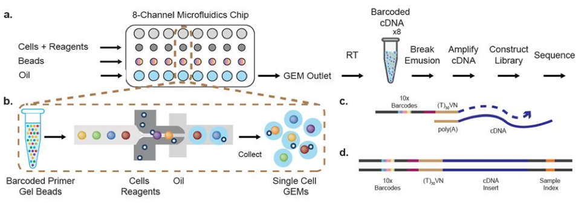

Motivation
Exploration of the Common Framework for Analyzing Single-Cell RNA-seq data.
The workflow of the 10X Single-Cell RNA-seq library prep for single-cell expression profiling looks like this:

Dr. Eric Chow gives a fantastic overview of Droseq (min 7:08).
Once the data is generated the sequencial steps to handle scRNAseq are the following:

The central object of the pipeline is SingleCellExperiment, which looks like this:

The OSCA book is an amazing resource to fully understand the math behind scRNAseq analysis workflow. It has 18 cases studies of scRNAseq.
The main steps followed in scRNAseq are:
Data Loading
QC
Normalization
Variance modeling
Dimensionality reduction
Clustering
Interpretation
Data loading
Here, I am going to use an example of 10X Genomics data the counts matrix and associated metadata (cell barcodes, data path, etc.). This is based on Chapter 27 in OSCA book. The DropletTestFiles package contains files that are the raw output of pipelines like 10X Genomics’ CellRanger software suite, that can be then imported via the DropletUtils package’s read10xCounts() function.
library(DropletTestFiles)
raw.path <- getTestFile("tenx-2.1.0-pbmc4k/1.0.0/raw.tar.gz")
out.path <- file.path(tempdir(), "pbmc4k")
untar(raw.path, exdir=out.path)
library(DropletUtils)
fname <- file.path(out.path, "raw_gene_bc_matrices/GRCh38")
sce.pbmc <- read10xCounts(fname, col.names=TRUE)
We need to make sure that we convert the easy interpretable gene symbol to a standard identifier that is guaranteed to be unique and valid (e.g., Ensembl).
library(scater)
rownames(sce.pbmc) <- uniquifyFeatureNames(
rowData(sce.pbmc)$ID, rowData(sce.pbmc)$Symbol)
library(EnsDb.Hsapiens.v86)
location <- mapIds(EnsDb.Hsapiens.v86, keys=rowData(sce.pbmc)$ID,
column="SEQNAME", keytype="GENEID")
In addition to this, the scRNAseq package provides convenient access to several publicly available data sets in the form of SingleCellExperiment object.
library(scRNAseq)
out <- listDatasets()
dim(out)
## [1] 46 5
head(out)
## DataFrame with 6 rows and 5 columns
## Reference Taxonomy Part Number
## <character> <integer> <character> <integer>
## 1 @aztekin2019identifi.. 8355 tail 13199
## 2 @bach2017differentia.. 10090 mammary gland 25806
## 3 @baron2016singlecell 9606 pancreas 8569
## 4 @baron2016singlecell 10090 pancreas 1886
## 5 @buettner2015computa.. 10090 embryonic stem cells 288
## 6 @campbell2017molecular 10090 brain 21086
## Call
## <character>
## 1 AztekinTailData()
## 2 BachMammaryData()
## 3 BaronPancreasData('h..
## 4 BaronPancreasData('m..
## 5 BuettnerESCData()
## 6 CampbellBrainData()
QC
An unique aspect of droplet-based data is that we have no prior knowledge about whether a particular library (i.e., cell barcode) corresponds to cell-containing or empty droplets. We use the emptyDrops() function to test whether the expression profile for each cell barcode is significantly different from the ambient RNA pool. emptyDrops() assumes that barcodes with low total UMI counts are empty droplets. emptyDrops() uses Monte Carlo simulations to compute p-values for the multinomial sampling transcripts from the ambient pool.
set.seed(100) #seed forreproducible results, emptyDrops performas a simulation.
e.out <- emptyDrops(counts(sce.pbmc))
sce.pbmc <- sce.pbmc[,which(e.out$FDR <= 0.001)] #we exclude dropplets that have low UMI counts
These are the unfiltered, non-empty drops
unfiltered <- sce.pbmc
For each cell, we calculate these QC metrics using the perCellQCMetrics() function from the scater package. The sum column contains the total count for each cell and the detected column contains the number of detected genes. Mitochondrial counts are informative, because small mitochondrial percentages, large spike-in percentages and small library sizes are likely to be stripped nuclei, i.e., they have been so extensively damaged that they have lost all cytoplasmic content, therefore are low quality cells. Here we use a relaxed QC strategy and only remove cells with large mitochondrial proportions, using it as a proxy for cell damage. This reduces the risk of removing cell types with low RNA content, especially in a heterogeneous PBMC population with many different cell types.
stats <- perCellQCMetrics(sce.pbmc, subsets=list(Mito=which(location=="MT")))
high.mito <- isOutlier(stats$subsets_Mito_percent, type="higher")
sce.pbmc <- sce.pbmc[,!high.mito]
summary(high.mito)
## Mode FALSE TRUE
## logical 3985 315
colData(unfiltered) <- cbind(colData(unfiltered), stats)
unfiltered$discard <- high.mito
gridExtra::grid.arrange(
plotColData(unfiltered, y="sum", colour_by="discard") +
scale_y_log10() + ggtitle("Total count"),
plotColData(unfiltered, y="detected", colour_by="discard") +
scale_y_log10() + ggtitle("Detected features"),
plotColData(unfiltered, y="subsets_Mito_percent",
colour_by="discard") + ggtitle("Mito percent"),
ncol=2
)
plotColData(unfiltered, x="sum", y="subsets_Mito_percent",
colour_by="discard") + scale_x_log10()
Normalization
There are a number of normalization methods. We use a pre-clustering step with quickCluster() where cells in each cluster are normalized separately and the size factors are rescaled to be comparable across clusters. This avoids the assumption that most genes are non-DE across the entire population - only a non-DE majority is required between pairs of clusters, which is a weaker assumption for highly heterogeneous populations. By default, quickCluster() will use an approximate algorithm for PCA based on methods from the irlba package. The approximation relies on stochastic initialization so we need to set the random seed (via set.seed()) for reproducibility. computeSumFactors performs a scaling normalization of single-cell RNA-seq data by deconvolving size factors from cell pools. Once we have computed the size factors, we use the logNormCounts() function from scater to compute normalized expression values for each cell. This is done by dividing the count for each gene/spike-in transcript with the appropriate size factor for that cell. The function also log-transforms the normalized values, creating a new assay called "logcounts". (Technically, these are “log-transformed normalized expression values”, but that’s too much of a mouthful to fit into the assay name.) These log-values will be the basis of our downstream analyses.
library(scran)
set.seed(1000)
clusters <- quickCluster(sce.pbmc)
sce.pbmc <- computeSumFactors(sce.pbmc, cluster=clusters)
sce.pbmc <- logNormCounts(sce.pbmc)
summary(sizeFactors(sce.pbmc))
## Min. 1st Qu. Median Mean 3rd Qu. Max.
## 0.00749 0.71207 0.87490 1.00000 1.09900 12.25412
We can plot The “library size factor” for each cell. As for bulk RNAseq, library
size normalization is the simplest strategy for performing scaling normalization.
However, library size normalization is usually sufficient in many applications where the aim is to identify clusters and the top markers that define each cluster.
plot(librarySizeFactors(sce.pbmc), sizeFactors(sce.pbmc), pch=16,
xlab="Library size factors", ylab="Deconvolution factors", log="xy")
Variance modelling/feature selection
Several methods are available to quantify the variation per gene and to select an appropriate set of highly variable genes (HVGs). UMI counts typically exhibit near-Poisson variation if we only consider technical noise from library preparation and sequencing. This can be used to construct a mean-variance trend in the log-counts with the modelGeneVarByPoisson function. We can then select the top 10% of genes with the highest biological components.
set.seed(1001)
dec.pbmc <- modelGeneVarByPoisson(sce.pbmc)
top.pbmc <- getTopHVGs(dec.pbmc, prop=0.1)
plot(dec.pbmc$mean, dec.pbmc$total, pch=16, cex=0.5,
xlab="Mean of log-expression", ylab="Variance of log-expression")
curfit <- metadata(dec.pbmc)
curve(curfit$trend(x), col='dodgerblue', add=TRUE, lwd=2)
Dimensionality reduction
Now we want to compare cells based on the values of gene expression. We can use
denoisePCA function, that “de-noises” log-expression data by removing principal components corresponding to technical noise.
set.seed(10000)
sce.pbmc <- denoisePCA(sce.pbmc, subset.row=top.pbmc, technical=dec.pbmc)
set.seed(100000)
sce.pbmc <- runTSNE(sce.pbmc, dimred="PCA")
set.seed(1000000)
sce.pbmc <- runUMAP(sce.pbmc, dimred="PCA")
We verify how many PCs were retained.
ncol(reducedDim(sce.pbmc, "PCA"))
## [1] 9
Clustering
We can now create nearest-neighbor graphs with the buildSNNGraph function and
cluster_walktrap function. cluster_walktrap will assign membership of densely connected subgraphs, also called “communities”.
g <- buildSNNGraph(sce.pbmc, k=10, use.dimred = 'PCA')
clust <- igraph::cluster_walktrap(g)$membership
colLabels(sce.pbmc) <- factor(clust)
table(colLabels(sce.pbmc))
##
## 1 2 3 4 5 6 7 8 9 10 11 12 13 14 15 16
## 205 508 541 56 374 125 46 432 302 867 47 155 166 61 84 16
plotTSNE(sce.pbmc, colour_by="label")
Interpretation
To interpret the clustering results, we need to identify the genes that drive separation between clusters. In the most obvious case, the marker genes for each cluster are a priori associated with particular cell types, allowing us to treat the clustering as a proxy for cell type identity. The same principle can be applied to discover more subtle differences between clusters (e.g., changes in activation or differentiation state) based on the behavior of genes in the affected pathways.
We perform pairwise t-tests between clusters for each gene using the findMarkers function, which uses a Welch t-test to perform DE testing between clusters and returns a list of DataFrames containing ranked candidate markers for each cluster.
markers <- findMarkers(sce.pbmc, pval.type="some", direction="up")
Let’s say that we want to examine the markers for cluster 8 in more detail.
marker.set <- markers[["8"]]
as.data.frame(marker.set[1:30,1:3])
## p.value FDR summary.logFC
## CSTA 7.170624e-222 2.015964e-217 2.4178954
## MNDA 1.196631e-221 2.015964e-217 2.6614935
## FCN1 2.375980e-213 2.668543e-209 2.6380934
## S100A12 4.393470e-212 3.700839e-208 3.0808902
## VCAN 1.711043e-199 1.153038e-195 2.2603760
## TYMP 1.173532e-154 6.590164e-151 2.0237930
## AIF1 3.673649e-149 1.768285e-145 2.4603604
## LGALS2 4.004740e-137 1.686696e-133 1.8927606
## MS4A6A 5.639909e-134 2.111457e-130 1.5457061
## FGL2 2.044513e-124 6.888781e-121 1.3859366
## RP11-1143G9.4 6.891551e-122 2.110945e-118 2.8042347
## AP1S2 1.786019e-112 5.014842e-109 1.7703547
## CD14 1.195352e-110 3.098169e-107 1.4259764
## CFD 6.870490e-109 1.653531e-105 1.3560255
## GPX1 9.048825e-107 2.032607e-103 2.4013937
## TNFSF13B 3.920319e-95 8.255701e-92 1.1151275
## KLF4 3.309726e-94 6.559876e-91 1.2049050
## GRN 4.801206e-91 8.987324e-88 1.3814668
## NAMPT 2.489624e-90 4.415020e-87 1.1438687
## CLEC7A 7.736088e-88 1.303299e-84 1.0616120
## S100A8 3.124930e-84 5.013875e-81 4.8051993
## SERPINA1 1.580359e-82 2.420392e-79 1.3842689
## CD36 8.018347e-79 1.174653e-75 1.0538169
## MPEG1 8.481588e-79 1.190744e-75 0.9778095
## CD68 5.118714e-78 6.898798e-75 0.9481203
## CYBB 1.200516e-77 1.555776e-74 1.0300245
## S100A11 1.174556e-72 1.465759e-69 1.8962486
## RBP7 2.467027e-71 2.968714e-68 0.9666127
## BLVRB 3.762610e-71 4.371634e-68 0.9701168
## CD302 9.859086e-71 1.107307e-67 0.8792077
The high expression of MNDA, CD14 and CD68 suggests that cluster 8 contains monocytes.
marker.set <- markers[["15"]]
as.data.frame(marker.set[1:30,1:3])
## p.value FDR summary.logFC
## AIF1 6.912466e-82 2.329086e-77 3.678553
## FCGR3A 3.606603e-64 6.076045e-60 3.041108
## SERPINA1 6.149257e-64 6.906436e-60 2.375549
## FTL 2.857395e-63 2.406927e-59 2.061453
## LST1 4.161324e-62 2.804233e-58 1.892121
## COTL1 1.582271e-61 8.885507e-58 1.305713
## CTSS 3.143428e-55 1.513067e-51 1.880227
## S100A11 1.719244e-54 7.241024e-51 2.030715
## TYMP 4.395645e-50 1.645632e-46 2.101758
## MS4A7 7.348647e-48 2.476053e-44 2.173820
## NAP1L1 2.806622e-47 8.596939e-44 1.142910
## FTH1 5.856763e-47 1.644481e-43 1.188781
## CD68 2.661218e-46 6.897469e-43 2.048530
## STXBP2 5.783395e-45 1.391898e-41 2.075910
## SAT1 9.269854e-43 2.082256e-39 1.541614
## TYROBP 3.459416e-42 7.285097e-39 1.152396
## PSAP 1.582943e-40 3.137392e-37 1.403571
## CSTB 3.871723e-40 7.247436e-37 1.129131
## CFD 4.529809e-39 8.033020e-36 1.999696
## FKBP1A 5.042155e-39 8.494519e-36 1.301575
## CEBPB 6.875529e-39 1.103162e-35 1.683662
## LINC01272 7.357858e-38 1.126889e-34 1.840199
## FCER1G 2.802003e-37 4.104813e-34 1.301967
## SPI1 9.236815e-36 1.296772e-32 1.890047
## S100A4 4.102320e-35 5.528943e-32 4.356299
## NEAT1 5.928869e-33 7.683358e-30 1.358303
## IFITM3 6.875461e-33 8.580066e-30 1.871086
## LYZ 8.944290e-32 1.076317e-28 1.804654
## LRRC25 1.072482e-31 1.246077e-28 1.242115
## RNASET2 7.560048e-31 8.490942e-28 1.090212
The high expression of FCGR3A suggests that cluster 15 contains macrophagues.
# Checking the cluster is what we wanted.
marker.set <- markers[["8"]]
topset <- rownames(marker.set)[1:30]
stopifnot(all(c("CD14", "CD68", "MNDA") %in% topset))
plotExpression(sce.pbmc, features=c("CD14", "CD68",
"MNDA", "FCGR3A"), x="label", colour_by="label")